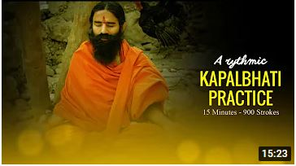

PRANAYAMA
Pranayama is the ancient practice of controlling your breath. You control the timing, duration, and frequency
of every breath and hold.
The goal of pranayama is to connect your body and mind. It also supplies your body with oxygen while removing toxins.
This is meant to provide healing physiological benefits.
SOME OF THE BASIC PRANAYAMAS
1. Bhramari
The Bhramari pranayama breathing technique derives its name from the black Indian bee called Bhramari. Bhramari
pranayama is effective in instantly calming down the mind. It is one of the best breathing exercises to free the
mind of agitation, frustration or anxiety and get rid of anger to a great extent.
2. Anulom Vilom
Anulom vilom is a specific type of controlled breathing (pranayama) in the practice of yoga. It involves holding
one nostril closed while inhaling, then holding the other nostril closed while exhaling. The process is then
reversed and repeated.
3. Ujjai
In yoga, Ujjayi breathing is sometimes also called "the ocean breath", as the movement of air in the glottis
(throat) resembles the sounds of waves of the ocean. A technique that builds heat in the body and relaxes the
mind, this breath suits students of all levels - from beginner to advanced.
4. Kapalbhati

When you do pranayama, 80% of the toxins in our body are released through the outgoing breath. Regular practice
of Kapal Bhati Pranayama detoxifies all the systems in our body. And the obvious sign of a healthy body is a
shining forehead.